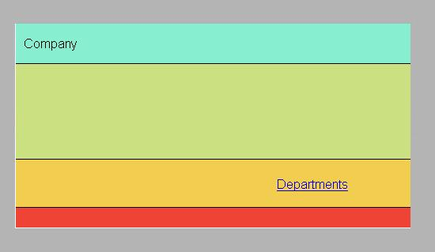
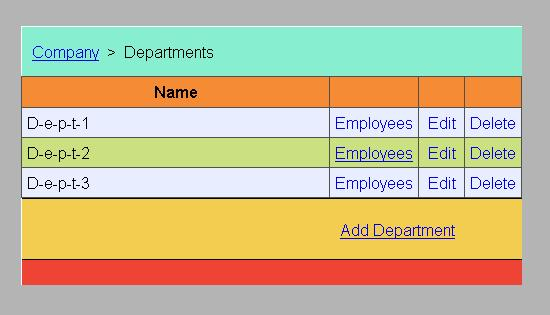
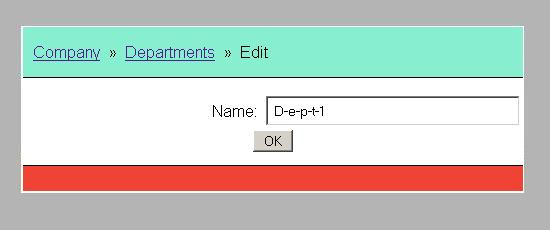
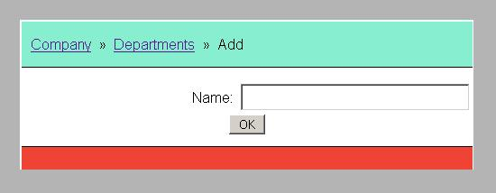
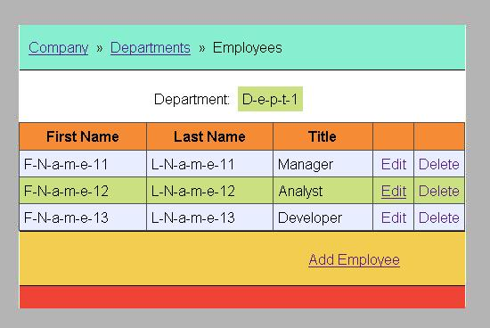
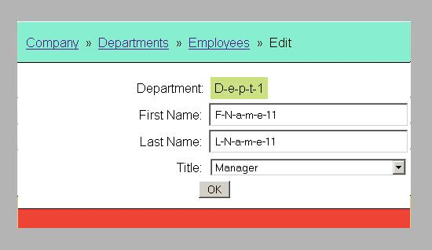
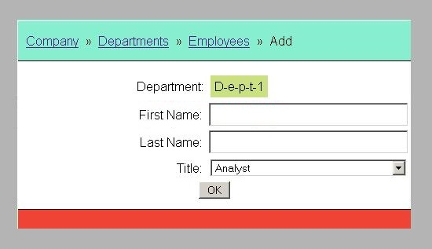

module 'ejb':
Java API Documentation module 'war':
Java API Documentation
module 'ejb':
Java API Documentation module 'war':
Java API DocumentationThis is an EJB 3 web application example.
module 'ejb':
Java API Documentation
module 'war':
Java API Documentation
The application uses the build automation tool Apache Maven 3.
The application was tested with JBoss EAP 7.1 and WildFly 11.0.
The application URL: http://localhost:8080/kp_ejb01/.
The application uses MySQL 5.7 relational database for data storage.
The application uses standard java loggers.
The Persistence Layer is based on EJB 3 and MySQL database.
The application uses Struts 2 web application framework.

Welcome page of the application. Overview of the company.

Listing all departments.

Editing the existing department.

Adding a new department.

Listing all employees of the selected department.

Editing the existing employee.

Adding a new employee.